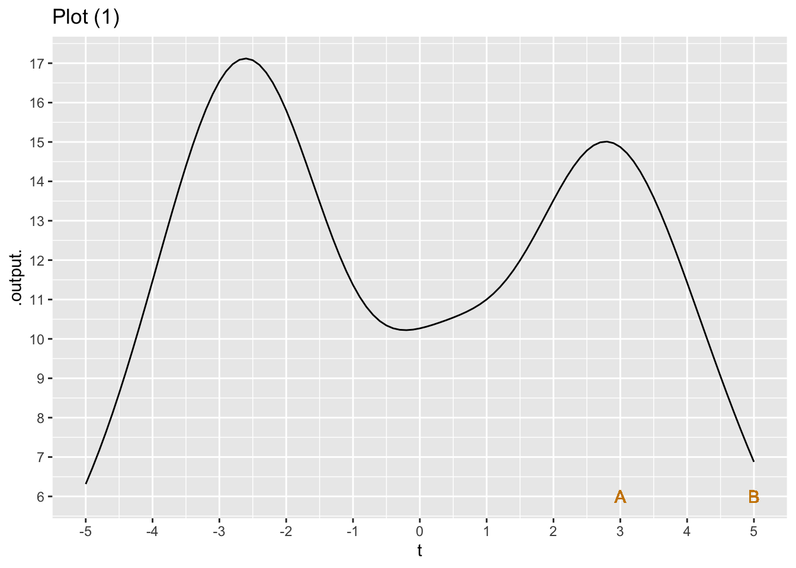
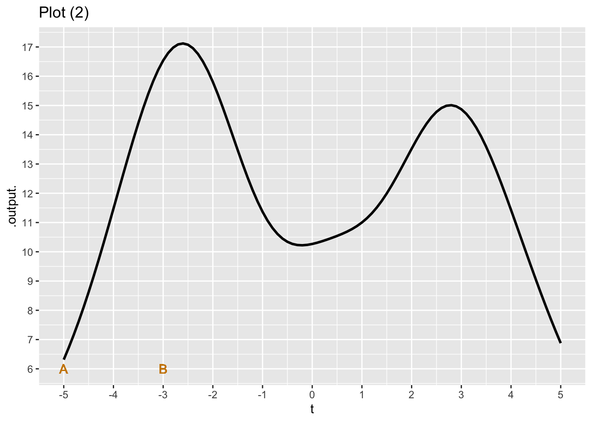
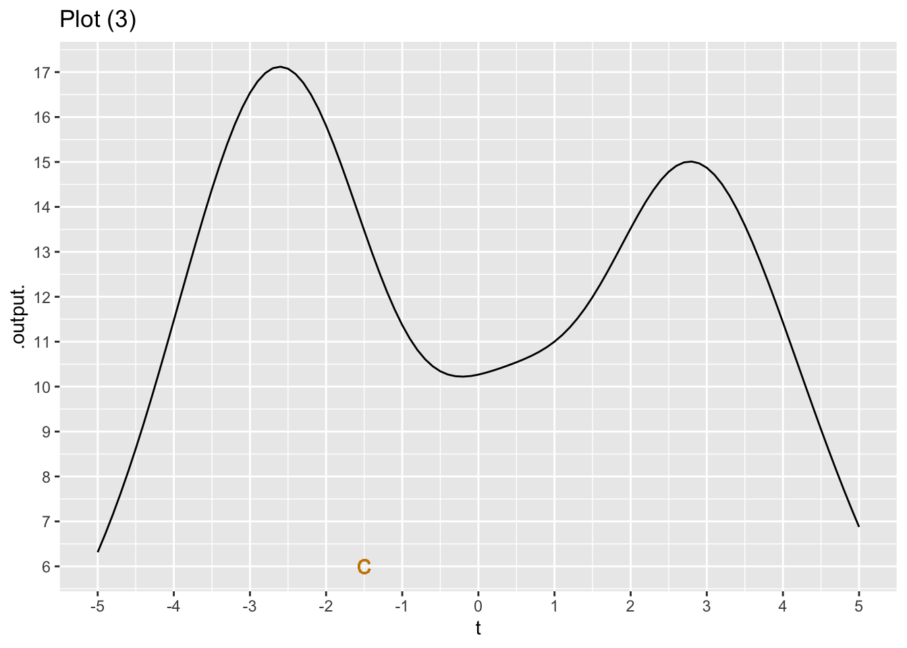
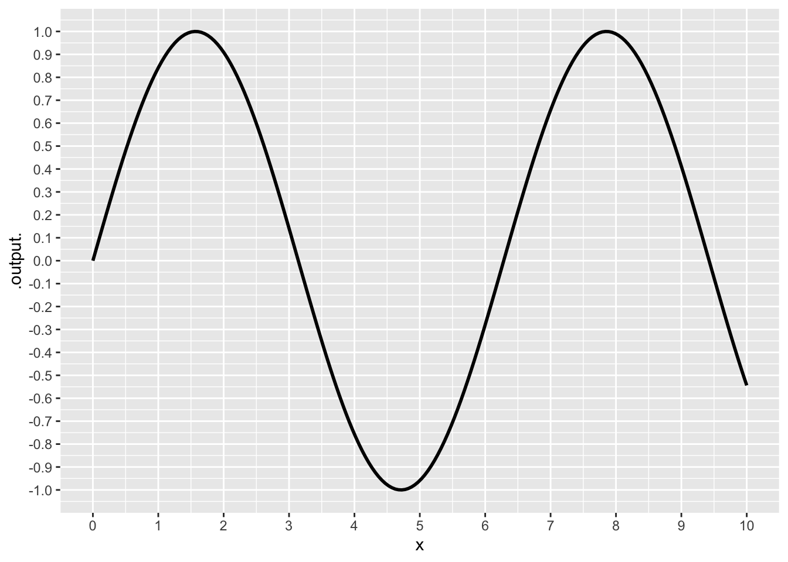
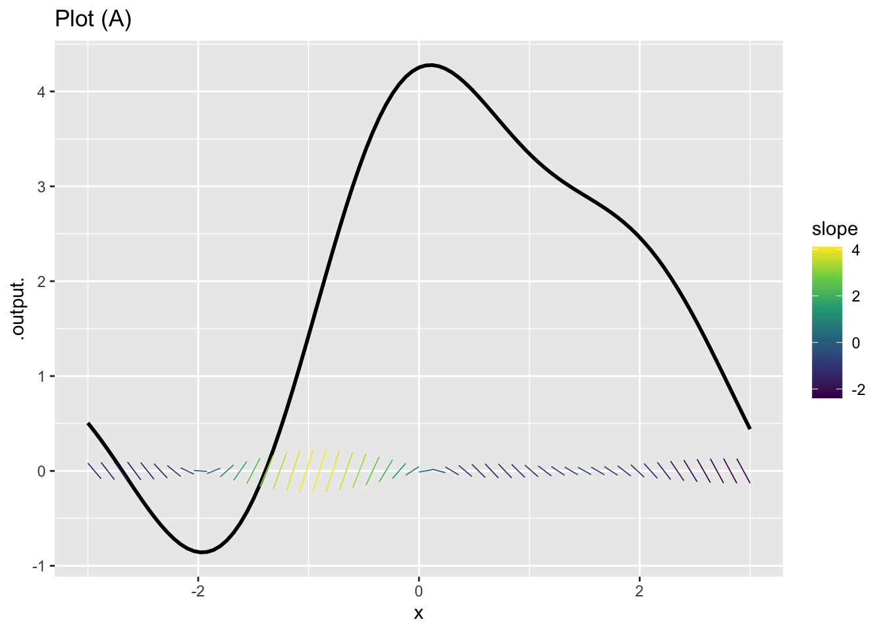
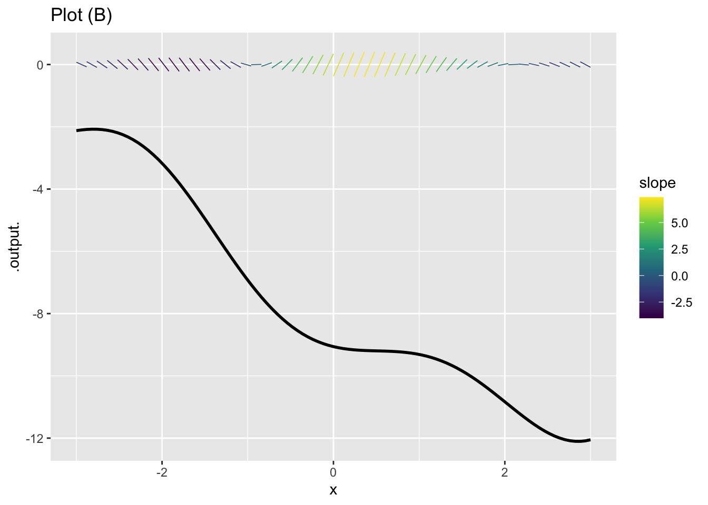
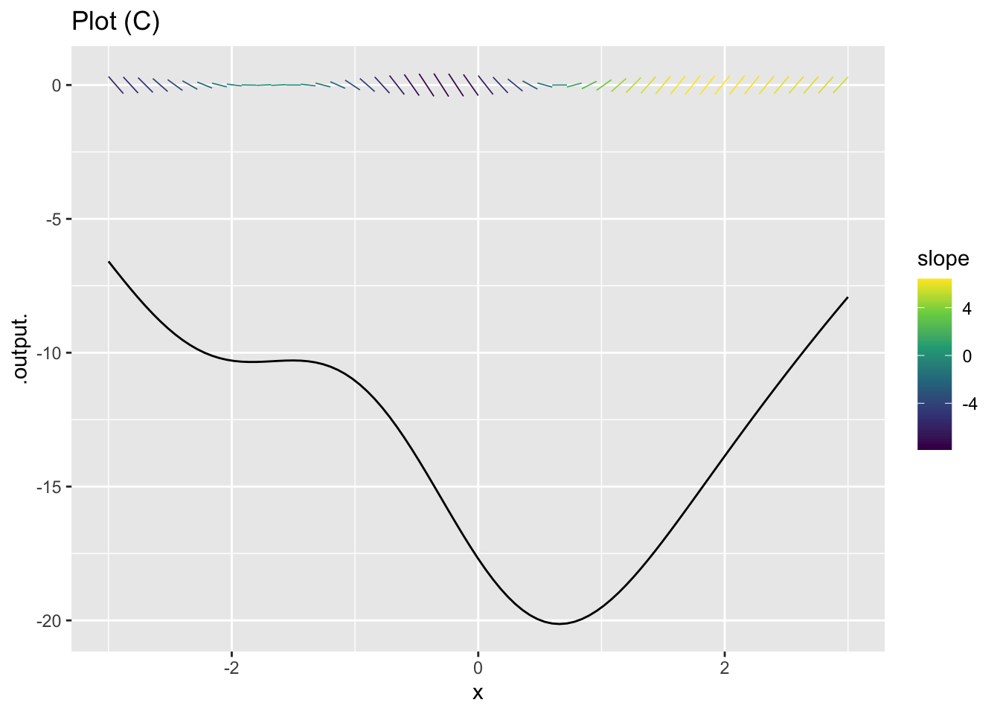
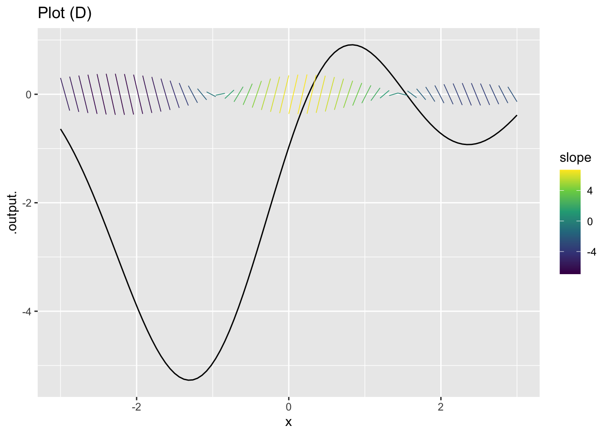

Chap 18 Exercises
\[ \newcommand{\dnorm}{\text{dnorm}} \newcommand{\pnorm}{\text{pnorm}} \newcommand{\recip}{\text{recip}} \]
Exercise 1 We will be working extensively with the change in output value of a function when the input value changes.
The change in the output value of a function \(f()\) when the input changes from \(x = a\) to \(x = b\) is \[f(x=b) - f(x=a)\] Notice that when we talk about the change from \(x=a\) to \(x=b\) we subtract \(f(a)\) from \(f(b)\). That change is sometimes called the rise in the value of the function. Rise always compares (by subtraction) the two output values corresponding to two specific input values. Remember that \(a\) and \(b\) stand for specific numbers.
Corresponding with the idea of the change in output being \(f(b) - f(a)\) the change in the input value to a function is \(b - a\). This is often called the run in the value of the input.
- True or false: In Graph I, the rise from a to b is positive.
TRUE FALSE
question id: snail-tear-blanket-1
- True or false: In Graph I, the run from \(x=a\) to \(x=b\) is positive.
TRUE FALSE
question id: snail-tear-blanket-2

- True or false: In Graph II, the run from a to b is positive.
TRUE FALSE
question id: snail-tear-blanket-3
- True or false: In Graph II, the rise from a to b is positive.
TRUE FALSE
question id: snail-tear-blanket-4
- True or false: In Graph II, the run from b to c is positive.
TRUE FALSE
question id: snail-tear-blanket-5
- True or false: In Graph II, the rise from b to c is positive.
TRUE FALSE
question id: snail-tear-blanket-6
- For an interval [2, 6] what is the value of the run? (The answer is independent of any particular graph/function.)
4 -4
question id: snail-tear-blanket-7
- Which is the run of the interval [6, 2]? (Again, the answer is independent of any particular graph/function.)
4 -4
question id: snail-tear-blanket-8
Exercise 2 Each of the following plots shows the graph of a function. Two specific inputs, labelled \(A\) and \(B\), are marked.

In plot (1), what is the rate of change over the interval \(A\) to \(B\)? (Pick the closest answer.)
-15/2 15/2 2/15 -2/15 8/2 -8/2 2/8 -2/8 -15/5
question id: duck-takes-chair-1

In plot (2), what is the rate of change over the interval \(A\) to \(B\)? (Pick the closest answer.)
-17/2 2/17 -10/2 10/2 2/10 -2/10 -17/-5
question id: duck-takes-chair-2

We haven’t told you exactly how to do this yet, but give it a try. What is the rate of change near the input marked \(C\)? (Pick the closest answer.))
-1/2 -1 -2 -3 -3/2 -4 -5 There is no slope at point C!
question id: duck-takes-chair-3
Exercise 3 Consider the sinusoid function graphed in Figure 1.

- What is the average rate of change over the interval \(0 < x < \frac{1}{2}\)? (Choose the closest value.)
0 0.5 1
question id: eagle-bring-car-1
- What is the average rate of change over the interval \(0 < x < 6.25\)? (Choose the closest value.)
-0.5 0 0.5
question id: eagle-bring-car-2
- What is the average rate of change over the interval \(0 < x < 10\)? (Choose the closest value.)
-0.05 -0.5 0 0.5
question id: eagle-bring-car-3
Exercise 4 Use these function definitions to help you in your calculations.
Using R, compute the average rate of change of the function over the given interval. Choose the closest answer for each problem.
- \(f(x) \equiv 2 e^{x+1}\) over [-2, 2]
-2.99 1.54 2.72 4.68 9.85 11.32
question id: chicken-show-map-1
- \(g(x) \equiv 3 e^{-x}\) over [-1, 1.5]
-2.99 1.54 2.72 4.68 9.85 11.32
question id: chicken-show-map-2
- \(h(x) \equiv x e^x\) over [0, 1]
-3 1.54 2.72 4.68 9.85 11.32
question id: chicken-show-map3
It is less work if we use the R function c() to define the interval, and the R function diff() to calculate differences. Active R chunk 2 contains an example asking you to compute the average rate of change of over the interval [0, 4]. Lines 2 and 5 show intermediate results to help you understand what is going on.
Note: The diff() and c() R functions used in Active R chunk 2 are very low-level R that doesn’t appear in R/mosaic. You haven’t seen them yet, nor will you see them very often.
- True or false: The average rate of change of \(f(x) \equiv e^{x^2}\) over [0.0, 0.1] is 0.1005017. (Remember to change the function definition on line 4 of Active R chunk 2!)
TRUE FALSE
question id: chicken-show-map4
- True or false: The average rate of change of \(f(x) \equiv \log(x)\) over [2, 3] is 0.5062353. (Hint: You’l have to change both the interval and the function definition in Active R chunk 2 for this one!)
TRUE FALSE
question id: chicken-show-map5
- True or false: The average rate of change of \(f(x) \equiv \sin(x)\) over [0.0, 0.5] is 0.9588511
TRUE FALSE
question id: chicken-show-map6
Exercise 5 For each of the following, compute the average rate of change of the function over the given interval.
- The average rate of change of \(f(x) \equiv x + 5\) over [3, 5] is
-2 0 1 3
question id: pig-look-rug-1
- The average rate of change of \(f(x) \equiv 3 - 2 x\) over [-4, -2] is
-4 -2 0 1 2 4
question id: pig-look-rug-2
- The average rate of change of \(f(x) \equiv -3 x^2\) over [0, 4] is
-24 -12 0 1 2 12 24
question id: pig-look-rug-3
- The average rate of change of \(f(x) \equiv x^3 - 2 x + 1\) over [0, 2] is
-2 1.5 2 7 10
question id: pig-look-rug-4
Exercise 6 There is a web of connections between the pattern-book functions and their slopes.
- Which pattern-book function has a slope function that is a visibly input-shifted version of itself? (For small enough \(h\).)
exponential sinusoid logarithm power-law \(x^{-1}\)
question id: slope-web-1-sin
- Which pattern-book function has a slope function that is identical to itself? (For small enough \(h\).)
exponential sinusoid logarithm power-law \(x^{-1}\)
question id: slope-web-1-exp
- Which pattern-book function has a slope function that is another pattern-book function? (Hint: The other function is also listed among the choices.)
exponential sinusoid logarithm power-law \(x^{-1}\)
question id: slope-web-1-log
Exercise 7 Each question involves a pair of quantities that are a function of time and that might or might not be a quantity/rate-of-change pair. If they are, say which quantity is which. Feel free to look up a dictionary definition of words you are uncertain about.
- Deficit and debt
Deficit is the rate of change of debt with respect to time.
Debt is the rate of change of deficit with respect to time.
They are not a rate of change pair.
question id: kid-mean-table-1
- Water contained (as in a bathtub) and flow (as from a faucet)
Flow is the rate of change of water contained with respect to time.
Water contained is the rate of change of flow with respect to time.
They are not a rate of change pair.
question id: kid-mean-table-2
- Interest rate and debt owed on credit card
Interest rate is the rate of change of credit card debt with respect to time.
Credit card debt is the rate of change of interest rate with respect to time.
They are not a rate of change pair.
question id: kid-mean-table-3
- Rain intensity and total rainfall
Rain intensity is the rate of change of total rainfall with respect to time.
Total rainfall is the rate of change of rain intensity with respect to time.
They are not a rate of change pair.
question id: kid-mean-table-4
- Force and acceleration
Force is the rate of change of acceleration with respect to time.
Acceleration is the rate of change of force with respect to time.
They are not a rate of change pair.
question id: kid-mean-table-5
- Position and acceleration
Position is the rate of change of acceleration with repect to time.
Acceleration is the rate of change of position with respect to time.
They are not a rate of change pair.
question id: kid-mean-table-6
- Velocity and air resistence
Velocity is the rate of change of air resistence with repect to time.
Air resistence is the rate of change of velocity with respect to time.
They are not a rate of change pair.
question id: kid-mean-table-7
Exercise 8 As you know, given a function \(g(x)\) it is easy to construct a new function \({\cal D}_x g(x)\) that will be an approximation to the derivative \(\partial_x g(x)\). The approximation function, which we call the slope function, can be \[{\cal D}_x g(x) \equiv \frac{g(x + 0.1) - g(x)}{0.1}\]
In Active R chunk 3, use makeFun() to create a function \(g(x) \equiv \sin(x)\) and another that will be the slope function, called it slope_of_g().
- What’s the value of
slope_of_g(1)?
0.3749 0.4973 1.3749 1.4973
question id: fsc1-1
Using Active R chunk 3, plot both g() and slope_of_g() (in blue) on a domain \(-5 \leq x \leq 5\). This can be done with slicePlot() in the following way:
slice_plot(g(x) ~ x,
domain(x = -5:5)) |>
slice_plot(slope_of_g(x) ~ x,
color="blue")- Which of these statements best describes the graph of \(g()\) compared to
slope_of_g()?
slope_of_g() is shifted left by about \(\pi/2\) compared to g(x).
slope_of_g() is shifted left by about \(\pi\) compared to g(x).
slope_of_g() has a larger amplitude than g()
The output of slope_of_g() is always positive
slope_of_g() is practically the same function as g(). That is, for any input the output of the two functions is practically the same.
question id: fsc1-2
Exercise 9 MOSAIC Calculus Sec 18.5 discusses the dimension of quantities that are a derivative of some other quantity.
Tanks for bulk storage of natural gas are typically large cylinders with a cap that can move up and down. The volume of the tank is a function of the position of the cap. What is the dimension of the derivative of cylinder volume with respect to cap position?
\(L^2\) \(L\) \(L^3\) \(L^3/T\) \(T/L^3\)
question id: rat-take-fork-1
Exercise 10 A common programming pattern in R/mosaic calculus is:
Operator(tilde_expression, [optional details])
Some of the operators we use in MOSAIC Calculus: slice_plot(), contour_plot, make_Fun(), D(), antiD(), Zeros()
For each of the following R/mosaic expressions, determine which kind of thing is being created. Feel free to run the expressions Active R chunk 4.
Expression 1: makeFun(a*x - b ~ x)
a function of x
a function of x, a, and b
a tilde expression
a plot
a data frame
an error
question id: tilde-function-1
Expression 2: D(a*x - b ~ x)
a function of a
a function of x, a, and b
a tilde expression
a plot
a data frame
an error
question id: tilde-function-2
Expression 3: antiD(a*x - b ~ x)
a function of a
a function of x, a, and b
a tilde expression
a plot
a data frame
an error
question id: tilde-function-3
Expression 4: slice_plot(a*x - b ~ x, domain(x=0:5))
a function of x
a function of x, a, and b
a tilde expression
a plot
a data frame
an error
question id: tilde-function-4
Expression 5.
f <- makeFun(a*x + b ~ x, a=2, b=-4)
slice_plot(f(x) ~ x, domain(x=0:5))
a function of x
a function of x, a, and b
a tilde expression
a plot
a data frame
an error
question id: tilde-function-5
Expression 6. Zeros(a*x - b ~ x, domain(x=0:5))
a function of x
a function of x, a, and b
a tilde expression
a plot
a data frame
an error
question id: tilde-function-6
Expression 7: a*x - b ~ x
a function of x
a function of x, a, and b
a tilde expression
a plot
a data frame
an error
question id: tilde-function-7
Expression 8:
f <- makeFun(a*x + b ~ x, a=2, b=-4)`
Zeros(f(x) ~ x)
a function of x
a function of x, a, and b
a tilde expression
a plot
a data frame
an error
question id: tilde-function-8
- Suppose you create a function in the usual way, e.g.
f <- makeFun(a*x + b ~ x, a=2, b=-4). Which of the following will plot a straight-line function with a slope of 5.
slice_plot(f(x) ~ x, domain(x=-5:5))
slice_plot(f(x, b=2), domain(x=-5:5)
slice_plot(f(x, a=5), domain(x=-5:5)
question id: tilde-function-9
Exercise 11 The plots each show a function graphed in the usual way, and a slope function graphed using the slope function visualization. Your task is to determine whether the slope function being displayed in each graph is a match to the function in that graph.

In plot (A), does the slope function displayed correspond to the function that is graphed?
Yes No
question id: titmouse-throw-sofa-A

In plot (B), does the slope function displayed correspond to the function that is graphed?
Yes No
question id: titmouse-throw-sofa-B

In plot (C), does the slope function displayed correspond to the function that is graphed?
Yes No
question id: titmouse-throw-sofa-C

In plot (D), does the slope function displayed correspond to the function that is graphed?
Yes No
question id: titmouse-throw-sofa-D
No answers yet collected